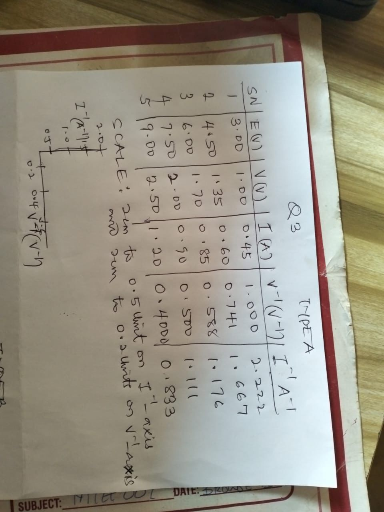
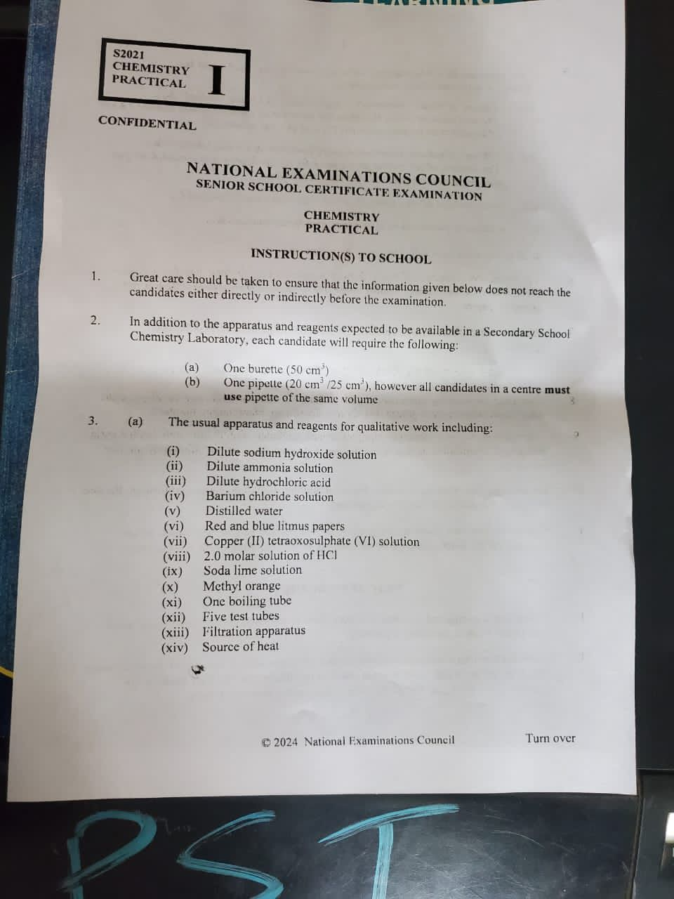

WELCOME TO OUR ANSWER PAGE
Meet team Sucess2024@ Examsuccess.ng
Examsuccess.ng is the 100% guaranteed link betwen you and flying colours in JAMB | WAEC | NECO | NABTEB | GCE | IJMB & JUPEB Examinations.


(2bi)
i. Chemical Reaction
ii.Electromagnetic Induction

(2bii)
Ohm's law states that the current flowing through a conductor between two points is directly proportional to the voltage across the two points, provided the temperature remains constant. Mathematically, it's expressed as V = IR, where V is the voltage, I is the current, and R is the resistance.

(4a)
Distribution refers to the process of making products or services available to customers through various channels, such as retailers, wholesalers, and agents.
(4b)
(i)Convenience: Retailers provide a convenient location for consumers to purchase products, often with extended hours and a wide range of products under one roof.
(ii)Product Information: Retailers can offer expert advice and product knowledge, helping consumers make informed purchasing decisions.
(iii)After-Sales Support: Retailers may provide after-sales support, such as warranties, repairs, and returns, which can enhance the overall consumer experience.
(4c)
(i)Increased Costs: Middlemen, such as wholesalers and distributors, can add to the cost of products, reducing profit margins for manufacturers and increasing prices for consumers.
(ii)Reduced Control: Manufacturers may have limited control over the distribution process and the final sale of their products when using middlemen.
(iii)Potential for Stockouts: Middlemen may not always maintain adequate inventory levels, leading to stockouts and lost sales for manufacturers and retailers.

ECONOMICS
(4a)
(PICK ANY ONE)
Distribution refers to the process by which goods and services are allocated from the producers to the consumers.
OR
Distribution involves the movement of goods and services from the point of production to the point of consumption.
OR
Distribution refers to the allocation of goods, services, or income among individuals or groups within a society.
(4b)
(PICK ANY THREE)
(i) Convenience: Retailers provide consumers with convenient locations and hours of operation, making it easy for them to purchase goods and services when they need them.
(ii) Product Variety: Retailers offer a wide range of products and brands, giving consumers a variety of options to choose from, making it more likely that they will find what they are looking for.
(iii) Product Information: Retailers often have knowledgeable staff that can provide consumers with information about products, helping them make informed purchasing decisions.
(iv) After-Sales Service: Retailers may offer after-sales services such as warranties, repairs, and returns, which can provide consumers with peace of mind and protection for their purchases.
(v) Competitive Pricing: Retailers compete with each other, which can lead to lower prices and better value for consumers, making it more affordable for them to purchase the goods and services they need.
(4c)
(PICK ANY THREE)
(i) Increased Costs: Middlemen add their own margins to the prices of goods, increasing the cost to the consumer. This can make goods less competitive in the market and reduce demand.
(ii) Reduced Profit Margins for Producers: The addition of middlemen can reduce the profit margins for producers, as they have to share their revenue with multiple intermediaries.
(iii) Longer Distribution Channels: The presence of middlemen can lengthen the distribution channel, leading to delays in the delivery of goods to the consumer.
(iv) Loss of Control: Producers may lose control over the distribution process and the final sale of their products when middlemen are involved.
(v) Potential for Quality Issues: Middlemen may not always handle products with care, which can lead to quality issues and damage to the product during transportation and storage.
(7a)
(PICK ANY ONE)
A Central Bank is a government-owned or controlled institution responsible for regulating a country's monetary policy, maintaining financial stability, and supervising the banking system. Examples of Central Banks include the Federal Reserve in the United States, the Bank of England in the United Kingdom, and the Central Bank of Nigeria.
OR
A central bank is a government-owned or independent entity responsible for overseeing a country's monetary policy, regulating its financial system, and maintaining financial stability.
(7b)
(PICK ANY THREE)
(i) Open Market Operations (OMO): Selling government securities on the open market to absorb excess liquidity and reduce money supply.
(ii) Increase in Reserve Requirement: Raising the minimum reserve requirement for commercial banks, forcing them to hold more reserves and reduce lending, thereby reducing money supply.
(iii) Increase in Interest Rates: Raising interest rates to make borrowing more expensive, reducing demand for loans, and decreasing money supply.
(iv) Sale of Government Bonds: Selling government bonds to absorb excess liquidity and reduce money supply.
(v) Moral Suasion: This is the act of using persuasion and influence to encourage commercial banks to reduce lending and curb money supply.
(7c)
(i) Banker to the Government:
The Central Bank acts as the government's bank, providing services such as: Managing government accounts, Handling government finances, Advising on economic policy, Implementing monetary policy.
(ii) Banker to Commercial Banks:
The Central Bank acts as the bank for commercial banks, providing services such as: Holding reserve deposits, Providing liquidity, Supervising and regulating banking activities, Acting as a lender of last resort.
(iii) Lender of Last Resort:
The Central Bank acts as the lender of last resort by providing emergency loans to commercial banks facing liquidity crises, preventing bank failures and maintaining financial stability.
CRK ANSWERS
CRK ANSWERS1a
According to the Bible, King Solomon's unwise policies had several consequences for Israel. Here are three ways Israel was affected:
i . Economic burden: Solomon's excessive building projects, luxurious lifestyle, and extensive trade networks led to a significant economic burden on the people of Israel. He imposed high taxes, forced labor, and heavy tribute, which caused widespread discontent and resentment among the population (1 Kings 12:4).
ii . Political instability: Solomon's policies and actions ultimately led to the division of the kingdom after his death. His son Rehoboam's refusal to ease the economic burden led to the secession of the northern tribes, forming the Kingdom of Israel (also known as the Northern Kingdom), while Judah and Benjamin remained loyal to Rehoboam, forming the Kingdom of Judah (1 Kings 12).
iii. Religious apostasy: Solomon's marriages to foreign wives and his accommodation of their religions led to the introduction of idolatrous practices in Israel, which undermined the people's faithfulness to the Lord and contributed to the nation's spiritual decline (1 Kings 11:1-13).
These consequences had far-reaching effects on Israel's history, leading to centuries of division, conflict, and ultimately, exile.
(2a)
(PICK ANY THREE)
(i) Opposition from Surrounding Peoples: The Jewish returnees faced strong opposition from neighboring groups like the Samaritans. These groups were hostile and actively worked to discourage and hinder the rebuilding efforts, sometimes even resorting to political maneuvers to halt the construction.
(ii) Resource Scarcity: The returnees struggled with a lack of resources needed for the reconstruction. Limited financial and material resources made it difficult to obtain the necessary building supplies, such as timber and stone, to rebuild the temple.
(iii) Internal Disunity: Among the Jewish returnees, there were divisions and disagreements about how to proceed with the rebuilding process. This internal disunity weakened their collective efforts and slowed down the progress of the construction work.
(iv) Economic Hardship: Many returnees faced severe economic difficulties upon their return. The region had been neglected for years, and there was widespread poverty. The struggle to make a living and provide for their families made it challenging to focus on rebuilding the temple.
(v) Political Instability: The returnees also faced political instability both within the Persian Empire, which ruled over them, and from local governors who were not supportive of their efforts. Changes in political leadership could result in changes in policy that affected the rebuilding process.
(vi) Lack of Skilled Labor: After years of exile, many skilled workers and artisans who had the expertise to construct the temple were either not available or not in the best condition to work. The shortage of skilled laborers slowed down the construction and affected the quality of the work.
(2b)
(PICK ANY THREE)
(i) Corruption:
Corruption at various levels of government and public institutions diverts resources meant for development into private pockets. This undermines public trust and reduces the effectiveness of development programs.
(ii) Poor Infrastructure:
Inadequate infrastructure such as roads, electricity, and water supply hampers economic growth. Poor infrastructure makes it difficult to attract investment and slows down the pace of development.
(iii) Political Instability:
Frequent changes in government, political conflicts, and lack of continuity in policies disrupt development initiatives. Political instability creates an uncertain environment that is not conducive to sustainable development.
(iv) Education System Deficiencies:
An underfunded and poorly managed education system fails to equip the population with the necessary skills and knowledge. This results in a workforce that is not adequately prepared to drive development.
(v) Healthcare Challenges:
Poor healthcare services lead to a less healthy population, which affects productivity and economic growth. High rates of disease and inadequate healthcare infrastructure pose significant barriers to development.
(vi) Economic Inequality:
A wide gap between the rich and the poor can hinder development by limiting access to opportunities for a large portion of the population. Economic inequality can lead to social unrest and reduce the overall economic potential of the country.
4a)
The incident that made the Jews describe King Cyrus of Persia as the Lord's anointed is recorded in the Bible in the Book of Ezra. According to the account, Cyrus issued a decree allowing the Jews who had been exiled in Babylon to return to Jerusalem and rebuild their temple. This act of kindness and support for the Jewish people was seen as a fulfillment of the prophecy in Isaiah 45:1, where Cyrus is referred to as the Lord's anointed, chosen to fulfill God's purposes.
4b)
i. Economic Contribution:
Immigrants often bring valuable skills, knowledge, and entrepreneurial spirit to their new country. They can start businesses, create jobs, and contribute to economic growth through their work and consumption.
ii. Cultural Enrichment:
Immigrants bring diversity to a society, enriching it with new perspectives, traditions, and experiences. This cultural exchange can lead to greater tolerance, understanding, and creativity within the host nation.
iii. Social Integration:
Immigrants can contribute to the social fabric of their host nation by participating in community activities, volunteering, and engaging with local residents. By building relationships and fostering connections, immigrants can help create a more inclusive and cohesive society.
(6a)
Jesus was arrested and taken to Caiaphas' house, where the Sanhedrin had gathered. The Sanhedrin sought false testimony against Jesus, but found none. Despite this, they persisted in their efforts to condemn Him. Two witnesses came forward, accusing Jesus of saying He would destroy the temple, but their testimonies didn't agree.
Caiaphas, the High Priest, asked Jesus to respond to the charges, but Jesus remained silent. Caiaphas then asked Jesus under oath if He was the Messiah, the Son of God. Jesus affirmed His identity, declaring, "You have said so. But I tell you, from now on you will see the Son of Man seated at the right hand of Power and coming on the clouds of heaven."
Caiaphas declared Jesus' response blasphemy and tore his robes. The Sanhedrin concurred, finding Jesus guilty and deserving of death. They bound Him and led Him away to the Roman governor, Pontius Pilate, to sentence Him to death. Through this sham trial, Jesus demonstrated His willingness to suffer for the truth, even in the face of injustice and corruption.
(6b)
(i) Injustice and corruption can reach even the highest levels of authority: Jesus' trial before the Sanhedrin and Caiaphas was a sham, with false testimony, coercion, and disregard for due process. This serves as a reminder to remain vigilant against corruption and to stand up for truth and justice, even in the face of powerful opposition.
(ii) Standing up for one's beliefs and identity can come at a great cost: Jesus refused to back down from His claims and identity, even when faced with death. His courage and conviction serve as an inspiration to remain faithful to one's beliefs and values, even in the face of persecution or adversity.
8.
(a) James and the Poor Man
In the church, James addressed the situation described by saying:
"My brethren, do not hold the faith of our Lord Jesus Christ, the Lord of glory, with partiality. For if there should come into your assembly a man with gold rings and fine apparel, and there should also come in a poor man in filthy garments, and you pay attention to the one wearing the fine clothes and say to him, 'You sit here in a good place,' and say to the poor man, 'You stand there,' or, 'Sit here at my feet,' have you not shown partiality among yourselves, and become judges with evil thoughts?" (James 2:1-4)
James condemned the practice of showing favoritism to the wealthy and discriminating against the poor. He taught that all believers, regardless of their socioeconomic status, should be treated with respect and dignity.
(b) Effects on Societal Progress
The situation of discrimination and prejudice based on wealth can affect the progress of society in three ways:
1. Social Division:
It creates a divide between the wealthy and the poor, leading to resentment, conflict, and instability.
2. Economic Inequality:
Discrimination against the poor perpetuates economic inequality and makes it difficult for them to improve their lives. This hinders economic growth and prevents society from reaching its full potential.
3. Moral Degradation:
The practice of favoring the wealthy over the poor erodes moral values and corrupts society's ethical foundation. It undermines the principles of justice, equality, and compassion that are essential for a healthy and prosperous society.
WE ARE SET FOR NECO

GOVERNMENT OBJECTIVE QUESTIONS ABOVE
LET'S TAKE YOU THROUGH THE SOLUTION
GOVERNMENT OBJ
1-10:DABADABDAD
11-20:
BAAABACBBD
21-30:
DCDDBACCAA
31-40:
DDBCCDDCDB
41-50:
AACDDACABD